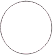

Музеї
Відвідування населенням музеїв за регіонами
(у розрахунку на 100 осіб*, 2017 р.)
| до 25 | |
| 25-50 | |
| 51-75 | |
| понад 75 | |
| дані відсутні |
| * у розрахунку використано дані про середньорічну чисельність наявного населення |
Кількість музеїв за регіонами
(одиниць)
| до 75 | |
| 75 - 100 | |
 | 101 - 150 |
|  | понад 150 |
Структура музеїв за формою власності
| державної власності | |
| приватної власності |
Профіль музеїв
| історичні | |
| археологічні | |
| краєзнавчі | |
| природничі | |
| літературні | |
| мистецькі | |
| етнографічні | |
| інші |
Примітка. Інформація по АР Крим подана станом на початок 2014 р.